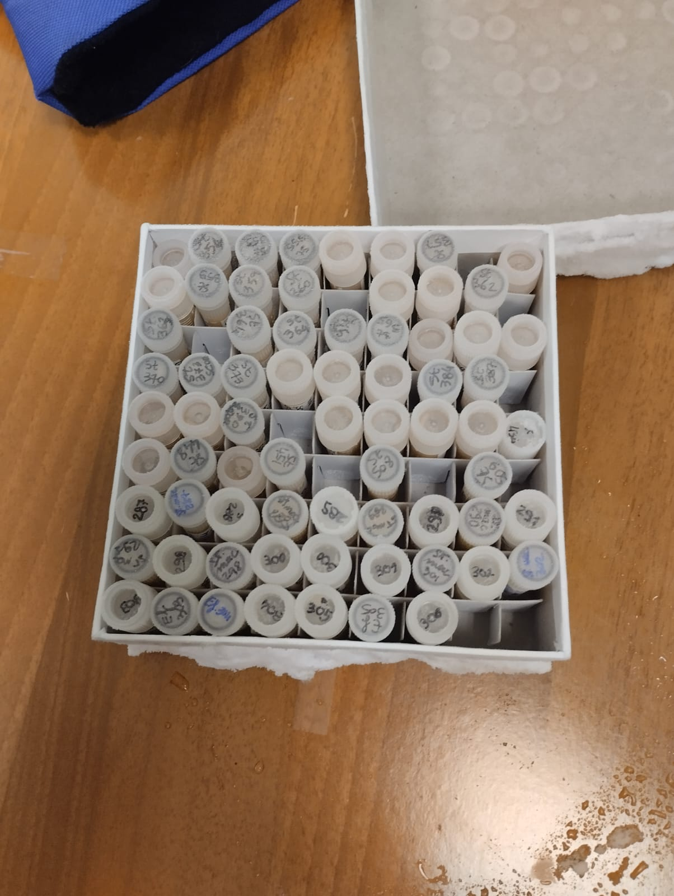

OUR VISION & SCIENCE
BEAUTY WITHOUT COMPROMISE
We believe that treating your skin shouldn't mean hurting the planet. For too long, the acne care industry has relied on harsh synthetic chemicals that irritate sensitive skin and single-use plastics that pollute our environment. RARE was born to break this cycle. We merge advanced biotechnology with the circular economy to create solutions that are ruthlessly effective against blemishes, yet incredibly gentle on you and the Earth.
HOW WE MAKE IT: THE RARE PROCESS
01. Sourcing Upcycled Materials
We start by rescuing high-quality tomato by-products—primarily peels and seeds—that would otherwise be discarded by the food industry. This zero-waste approach gives a second life to nutrient-rich organic matter.

02. Advanced Lacto-Fermentation
In our labs, we apply precision biotechnology. We subject the tomato extracts to a controlled lactic acid fermentation process using selected Lactobacillus strains. This natural fermentation unlocks the hidden potential of the plant matrices.

03. Extracting the Antimicrobial Power
The fermentation naturally generates highly effective antimicrobial compounds (such as organic acids and bacteriocins). These natural agents have been clinically proven to target and neutralize bacteria without the deep tissue irritation caused by traditional synthetic treatments.

04. The RARE Patch
Finally, we infuse these clean, green extracts into our ultra-thin, biodegradable patches. Enriched with anti-inflammatory agents like Niacinamide, the patch creates an optimal occlusive environment to defeat Cutibacterium acnes quickly and discreetly.